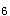
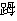

A.23条
B.44条
C.46条
D.2条
E.48条
参考答案：C
A.碱基
B.两条多核苷酸链
C.DNA和组蛋白
D.基因
E.脱氧核糖和磷酸
A.体细胞遗传病
B.单基因遗传病
C.线粒体病
D.染色体病
E.分子病
参考答案：D
A.孕妇年龄太小
B.孕妇接触有害化学物质、放射线
C.孕妇高血压
D.孕妇有反复流产史
E.尚不明确
参考答案：B
A.苯丙酮尿症
B.先天性甲减
C.血红蛋白病
D.帕金森病
E.糖原累积症
A.高血压
B.猫叫综合征
C.地中海病
E.苯丙酮尿症
A.一级预防
B.二级预防
C.三级预防
D.早期预防
E.中期预防
A.D/G易位型21-三体
B.嵌合型21-三体
C.G／G易位型21-三体
D.标准型21-三体
E.21/22易位型21-三体
A.特殊面容、身体和智力发育差
B.肥胖、身矮、肝肿大
C.头发黄、眼蓝色
D.智能落后、身矮、皮肤粗糙
E.面容丑陋、耳聋、多指骨畸形
参考答案：A
A.智能发育落后
B.特殊面容
C.通贯手
D.伴发畸形
E.染色体核型分析
参考答案：E
A.注意预防感染
B.尚无特殊有效治疗方法
C.如有畸形可手术矫治
D.可试用γ-氨基酸、谷氨酸、VB、叶酸等改善智商
E.应用激素治疗
A.患儿能逐步自理生活
B.患儿家长良好心理适应
C.患儿家长掌握有关疾病知识
D.患儿家长掌握教育、训练的技巧
E.患儿不发生外伤
A.常染色体隐性遗传
B.常染色体显性遗传
C.X连锁显性遗传
D.X连锁隐性遗传
E.X连锁不完全显性遗传
A.葡萄糖-6-磷酸酶
B.苯丙氨酸氢化酶
C.四氧生物喋呤
D.淀粉酶
E.机制尚不明确
A.出生时即有症状
B.出生3～6个月
C.出生6～9个月
D.1岁时
E.出生2个月
A.行为异常
B.智能发育落后
C.皮肤和虹膜色浅
D.尿及汗液呈鼠尿样臭味
E.肌张力减低
题目解析：智力发育落后最为突出，智商常低于正常。
A.红色
B.黄色
C.绿色
D.白色
E.黑色
A.立即给予高苯丙氨酸饮食
B.立即予低苯丙氨酸饮食
C.添加辅食以鸡蛋、豆类等高蛋白质食物为主
D.饮食控制应维持终生
E.超过1岁以后开始饮食控制
A.常染色体显性遗传
B.常染色体隐性遗传
A.缺乏苯丙氨酸羟化酶
B.缺乏肌磷酸化酶
C.葡萄糖-6-磷酸酶系统活力缺陷
D.磷酸果糖激酶缺乏
E.糖原分解酶缺乏
A.严重低血糖
B.酸中毒
C.呼吸困难
D.肝肿大
E.生长发育迟缓
A.常选食物为谷类、蔬菜、瘦肉、鱼、蛋等
B.少量多餐
C.多食糖果甜点等含糖量高的食物
D.低脂肪、高蛋白的饮食
E.避免剧烈运动、防止低血糖
A.增加餐次、保持正常血糖水平
B.预防感染
C.预防酸中毒
D.可试用高血糖，锌
E.在紧张、剧烈运动时增加葡萄糖摄入
A.智力低下
B.皮肤颜色变浅
C.湿疹
D.毛发枯黄
E.抽搐
A.长期鼻饲
B.口服生玉米淀粉
C.高糖饮食
D.高蛋白饮食
E.低脂肪饮食
A.智力和生长发育落后
B.皮肤和虹膜色泽浅
C.毛发枯黄稀疏
D.呕吐、喂养困难
E.尿及汗液有鼠尿样臭味
B.血清苯丙氨酸明显升高
C.阳性家族史
D.尿有鼠臭味
E.尿三氯化铁试验阳性
B.精神分裂症
C.糖原累积病
D.先天性心脏病
E.21-三体综合征
题目解析：易错的是糖原累积病,糖原累积病根据所缺陷的酶分为12型，其中IXb型为X连锁隐性遗传，其余都是常染色体隐性遗传。
A.腹痛、呕吐
B.腹泻、血便
C.身体、智力发育差
D.黄疸明显
E.发热、咳嗽
A.呆小病
B.21-三体综合征
C.癫痫
D.脑性瘫痪
A.先天性心脏病
B.甲状腺功能低下
D.苯丙酮尿症
A.21-三体综合征
C.肝豆状核变性
D.血友病
A.出生后3个月内
B.出生后6个月内
C.出生后9个月内
D.出生后12个月内
E.出生后18个月内
A.头发呈黄褐色
B.皮肤白皙且多湿疹
C.常有通贯手、智力低下
D.尿有鼠尿样臭味
E.可伴有惊厥
A.35岁以上妇女，妊娠后做羊水细胞检查
B.孕妇避免接触放射线、化学药物
C.注意发现易位染色体携带者
D.新生儿检查
E.以上都是
A.潜在并发症：感染
B.生长发育改变
C.营养失调：低于机体需要量
D.皮肤完整性受损
E.焦虑
A.眼距宽
B.舌常伸出口外
C.两眼外侧向上斜
D.贫血貌
E.皮肤粗糙
A.苯丙氨酸羟化酶
B.葡萄糖-6-磷酸酶
C.酪氨酸羟化酶
D.谷氨酸脱氢酶
E.苯丙氨酸氧化酶
A.18-三体畸变
B.21-三体畸变
C.D/G易位
D.G/G易位
E.嵌合型
A.通贯手
B.atd角度缩小
C.第4、5桡箕增多
D.脚趾球胫侧弓形纹
E.第5指只有1条指褶纹
A.唇裂
B.腭裂
C.先天性心脏病
D.六指畸形
E.消化道畸形
A.47.XY(XX)，+21
B.46,XY(XX),-14,+t(14q21q)
C.47，XY(XX)，-21
D.46,XY(XX),-21,+t(21q21q)
E.46,XY(XX),47,XY(XX),+21
A.治疗开始越早，效果越好
B.给予低苯丙氨酸奶粉喂养
C.每天仍应保证(30～50)mg/kg的苯丙氨酸摄入
D.饮食控制至少需持续至青春期
E.添加辅食以蛋白质类食物为主
A.猫叫综合征
B.先天性甲状腺功能减退症
A.Guthrie试验
B.尿三氯化铁试验
C.血浆苯丙氨酸浓度测定
D.毛细血管脆性试验
E.四氢生物蝶呤负荷试验
A.单基因遗传病
B.线粒体病
C.分子病
E.多基因遗传病
A.羊水细胞检查，如(+)，终止妊娠
B.终止妊娠
C.血清铜蓝蛋白测定，如降低，限制铜摄入量，服用锌制剂
D.避免近亲结婚
E.出生后数日做Guthrie试验，如(+)，开始治疗
A.常染色体畸变
C.伴性遗传
D.单基因遗传
E.染色体病
A.生长发育改变
B.焦虑（家长）
C.有皮肤完整性受损的危险
D.有感染的危险
E.知识缺乏
参考答案：A B C
A.应尽早在3个月以前开始治疗
B.超过1岁以后再治疗即可
C.饮食控制至少持续到青春期以后
D.忌用肉、蛋、豆等蛋白质高的食物
E.婴儿喂给特制的低苯丙氨酸奶粉
参考答案：A C D E
A.高血糖
B.低血糖
C.酸中毒
D.呼吸困难
E.肝肿大
参考答案：B C D E
A.清晨空腹血糖较低
B.葡萄糖耐量试验上升极峰不一定很高
C.血小板黏附和聚集功能低下
D.血清丙酮酸、三酸甘油酯、磷脂、尿酸增高
E.分子生物学检测鉴定患儿携带的突变等位基因
参考答案：A B C D E
A.用作对较大婴儿和儿童的苯丙酮尿症的筛查
B.将三氯化铁滴入尿液
C.呈现绿色为阳性，表示尿中苯丙氨酸浓度增高
D.本试验特异性强
E.用于新生儿出生喂奶3日后作常规筛查
A.属常染色体显性遗传
B.典型PKU系由于患儿肝细胞缺乏苯丙氨酸羟化酶
C.经饮食控制后，脑电图正常，特殊气味消失
D.出生后早发现早治疗可预防智能发育落后
E.尿及汗液中排除苯丙酮酸致使有特殊的鼠尿样臭味
参考答案：A E
A.眼距宽，眼裂小
B.流涎不止
C.鼻梁低平
D.耳大垂肩
E.表情呆滞
参考答案：A B C E
A.不明原因的反复流产、死胎、死产及不孕夫妇
B.性发育异常者
C.孕早期接触放射线，化学毒物或病原生物感染者
D.疑与遗传有关的先天畸形、原发性低智者
E.连续发生不明原因疾病的家庭成员
D.多基因遗传病
参考答案：A B C D
A.轻症表现为生长发育迟缓、腹部膨胀
B.身矮、骨质疏松
C.常有鼻衄
D.毛发枯黄、肌肉松弛
E.智能低下
A.检出携带者
B.无须产前诊断
C.遗传咨询
D.开展健康教育
E.加强婚前检查
A.控制感染
B.早期诊断
C.立即给治疗饮食
D.预防脑损害
E.预防智能低下
A.讲述疾病有关知识
B.强调饮食与智力、体格的关系
C.协助制订饮食治疗方案
D.提供遗传咨询
E.重视产前诊断
A.Guthrie细菌生长抑制试验
C.血游离氨基酸分析
D.DNA分析
E.中和抗体试验
A.先天性甲减
B.软骨营养不良
C.21-三体综合征
D.佝偻病活动期
A.特殊面容
B.智力低下
D.染色体核型分析
E.血清T、T、TSH测定
A.孕妇剖腹产
B.孕妇高龄
C.放射线
D.化学因素
E.病毒感染
A.羊水细胞染色体检查
B.绒毛膜细胞染色体检查
C.甲胎蛋白，游离雌三醇和绒毛膜促性腺激素检测
D.子宫彩超
E.避免近亲结婚
A.呆小症
B.脑瘫
C.苯丙酮尿症
D.癫痫
A.尿三氯化铁试验
B.脑电图检查
C.DNA分析
D.新生儿足跟血作Guthrie试验
E.血游离氨基酸分析
A.出生时
B.出生1～3个月
C.出生1年左右
D.出生1年3个月
E.出生3～6个月
A.药物治疗
B.饮食疗法
C.心理疗法
D.中医治疗
E.尚无特殊治疗方法
B.先天性甲状腺功能降低症
D.维生素D缺乏性佝偻病
E.特发性癫痫
A.静脉推注10%葡萄糖酸钙
B.口服甲状腺干粉片
C.限制饮食
D.做血尿化验检查
E.给予维生素D制剂
A.牛乳
B.豆腐
C.鸡蛋
D.土豆
E.小米粥
A.100mg/d
B.150mg/d
C.200mg/d
D.250mg/d
E.300mg/d
A.1岁左右
B.2～4岁
C.5～7岁
D.8～10岁
E.终身治疗
A.白化病
B.脑白质营养不良症
C.先天性甲状腺功能减退症
E.糖原累积病
A.血糖测定
B.血苯丙氨酸浓度测定
C.染色体检查
D.血酪氨酸值测定
E.肝脏活检病理学检查
A.立即进行低苯丙氨酸饮食治疗至症状消失
B.立即进行无苯丙氨酸饮食治疗
C.立即进行低苯丙氨酸饮食治疗并至少维持至青春期以后
D.立即进行低苯丙氨酸饮食治疗并维持至学龄前期
E.立即进行低苯丙氨酸饮食治疗至终生
B.虹膜色泽变浅
C.皮肤干燥，常有湿疹
E.身材矮小，四肢短
F.皮肤色泽变浅
参考答案：B C D F
A.给予低苯丙氨酸饮食
B.适当控制苯丙氨酸的摄入，持续至成年
C.添加辅食应以淀粉类、蔬菜和水果等低蛋白质食物为主
D.原则是既保证生长发育和体能代谢的最低需要又能维持血中苯丙氨酸0.12~0.6mmol/L
E.饮食控制应至少持续到青春期以后
F.忌用肉，蛋，豆类等高蛋白质食物
参考答案：A C D E F
A.新生儿足跟血筛查
B.避免近亲结婚
C.避免孕期接触放射线，致畸药物或病原生物感染
D.对患儿家族做苯丙氨酸耐量试验，检出杂合子
E.有阳性家族史的新生儿生后应做检查
F.35岁以上妇女妊娠后
参考答案：A B D E
微信关注